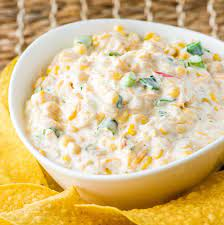

Corn Dip

Description
A dip that is perfect for parties! A classic!
Allergens: Jalapeno
Ingredients
- 2 TBSP - Unsalted Butter
- 3-1/2 Cups - Corn Kernels
- 1/2 tsp - Kosher Salt
- 1/8 tsp - Black Pepper
- 1 Cup - Yellow Onion, finely chopped
- 1/2 Cup - Red Bell Pepper, finely chopped
- 1/4 tsp - Cayenne
- 1/4 Cup - Green Onions, chopped
- 1 - Jalapeno, seeded and minced
- 2 tsp - Minced Garlic
- 1/2-1 Cup - Mayonnaise
- 4 oz - Monterey Jack Cheese, shredded
- 4 oz - Sharp Cheddar Cheese, shredded
- Tortilla Chips
Steps
- Preheat oven to 350 degrees. Melt 1 TBSP of the butter in a large skillet over medium-high heat.
- Add corn, salt, and pepper to the skillet. Cook, stirring occasionally, until the kernels turn a deep golden brown, about 5 minutes. Transfer to a mixing bowl.
- Melt the remaining TBSP of butter in the skillet.
- Add yellow onion and bell peppers in to the skillet, and cook until onions are wilted, about 2 minutes. Stir often. Transfer to the mixing bowl with corn.
- Add mayonnaise, 1/2 of the monterey jack cheese, 1/2 of the sharp cheddar cheese, and the cayenne. Mix until thoroughly combined.
- Pour the mixture into an 8" dish and sprinkle the remaining cheese on top.
- Bake until bubbly or golden brown, 10-12 minutes.
- Serve in dish with tortilla chips.